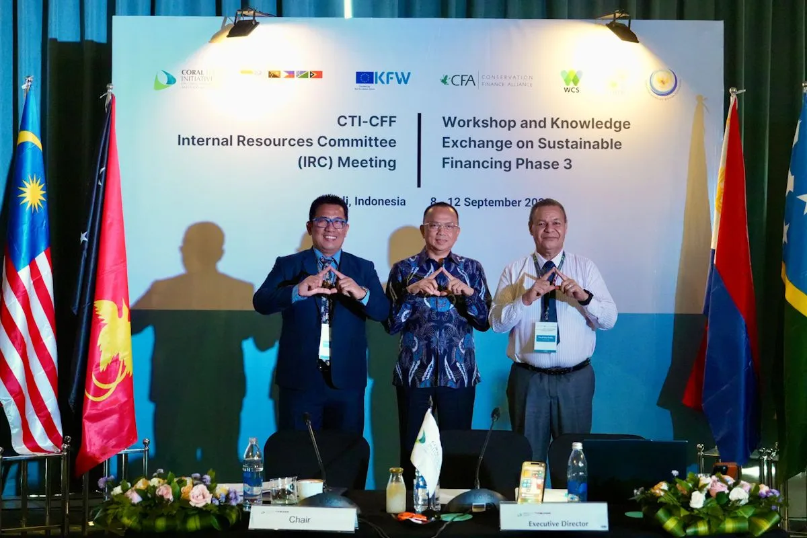
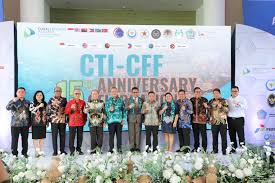
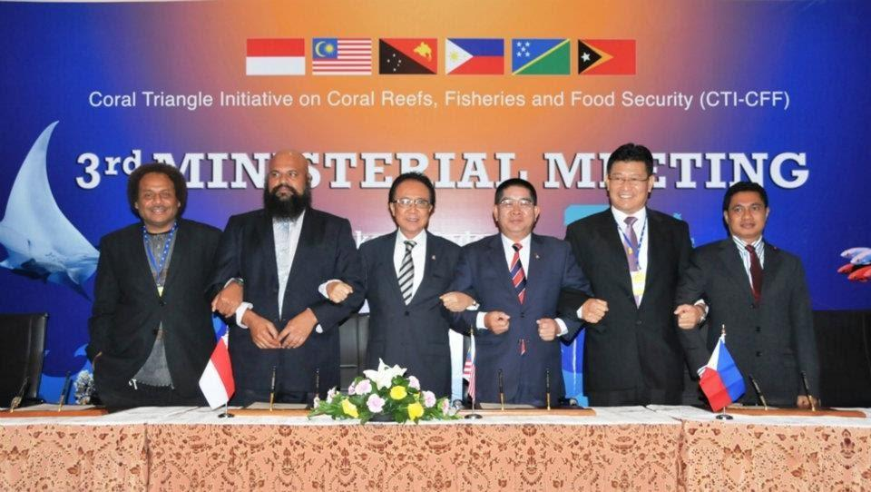
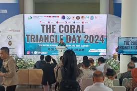
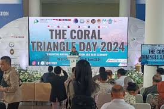

 

Kerja sama regional antara Indonesia dan negara-negara anggota Coral Triangle Initiative on Coral Reefs, Fisheries, and Food Security (CTI-CFF) serta program SEACONNECT berfokus pada perlindungan ekosistem laut di kawasan Segitiga Terumbu Karang. Melalui kemitraan ini, negara-negara anggota menyusun rencana aksi regional yang mencakup pengelolaan perikanan berkelanjutan, konservasi terumbu karang, perlindungan habitat seperti mangrove dan padang lamun, serta penguatan kapasitas adaptasi terhadap perubahan iklim. Program ini juga mendorong pembentukan dan peningkatan efektivitas kawasan konservasi laut lintas negara, mengingat dinamika laut dan migrasi biota tidak mengenal batas administratif. Selain itu, Indonesia bersama Malaysia dan Filipina juga menjalankan inisiatif SEACONNECT yang menargetkan penguatan tata kelola bentang laut Sulu–Sulawesi. Melalui program tersebut, negara-negara bekerja sama dalam pemantauan sumber daya laut, pengelolaan ekosistem secara adaptif, serta peningkatan kesejahteraan masyarakat pesisir melalui pendekatan ekonomi biru.
Upaya konkret dari kolaborasi ini meliputi perlindungan dan pengelolaan efektif terhadap lebih dari 200.000 hektar habitat laut, pemulihan stok ikan yang mengalami tekanan penangkapan berlebih, dan penguatan jaringan kawasan konservasi laut di seluruh Coral Triangle. Kerja sama ini juga memberikan manfaat langsung bagi ribuan nelayan dan masyarakat pesisir melalui pelatihan, diversifikasi mata pencaharian, serta dukungan ekonomi berkelanjutan. Selain itu, negara-negara anggota menjalankan riset bersama, pertukaran data ilmiah, dan program peningkatan kapasitas guna memperkuat manajemen kelautan berbasis sains. Inisiatif pendanaan konservasi yang dikembangkan di bawah CTI-CFF turut memastikan bahwa program perlindungan laut memiliki keberlanjutan jangka panjang. Secara keseluruhan, kolaborasi regional ini menjadi langkah strategis dalam mencapai SDG 14, karena menghadirkan pendekatan terpadu untuk menjaga kesehatan laut sekaligus meningkatkan stabilitas sosial dan ekonomi masyarakat yang bergantung pada sumber daya pesisir.